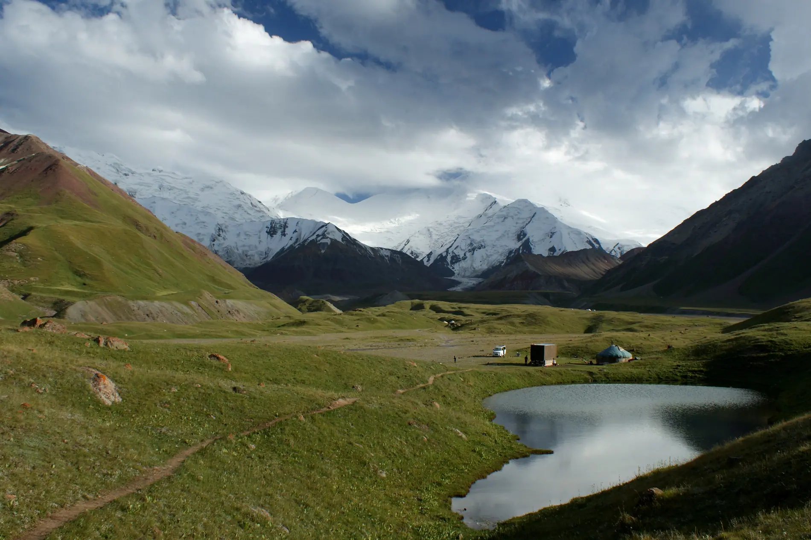
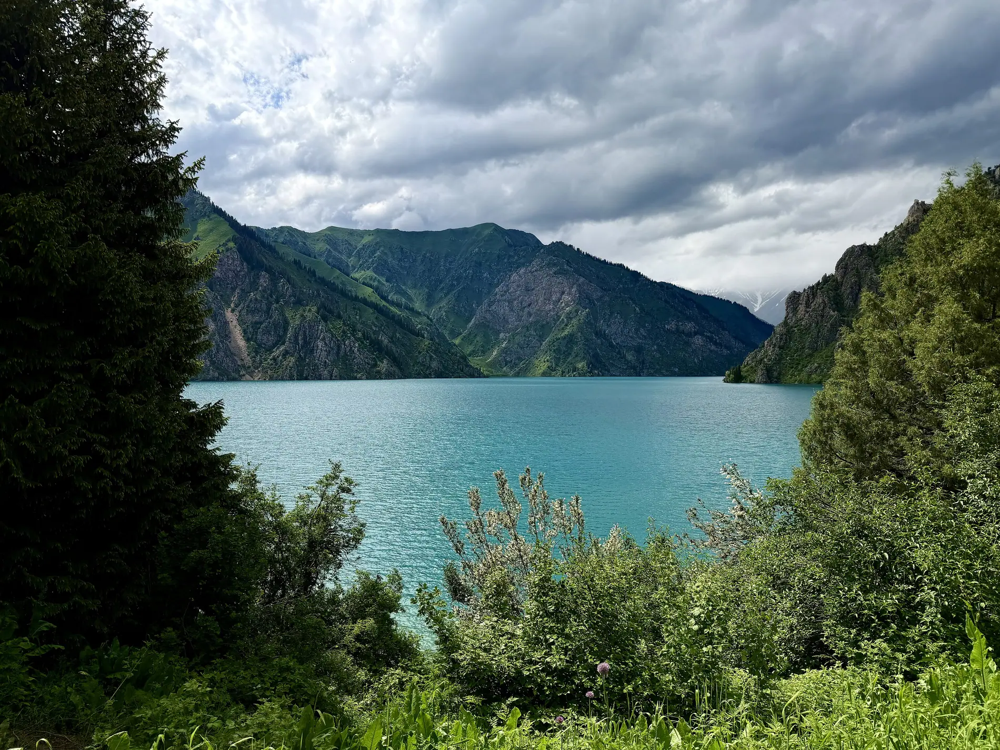
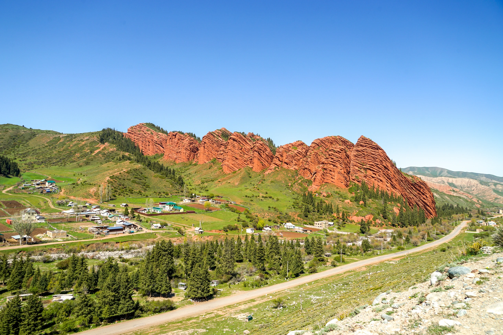
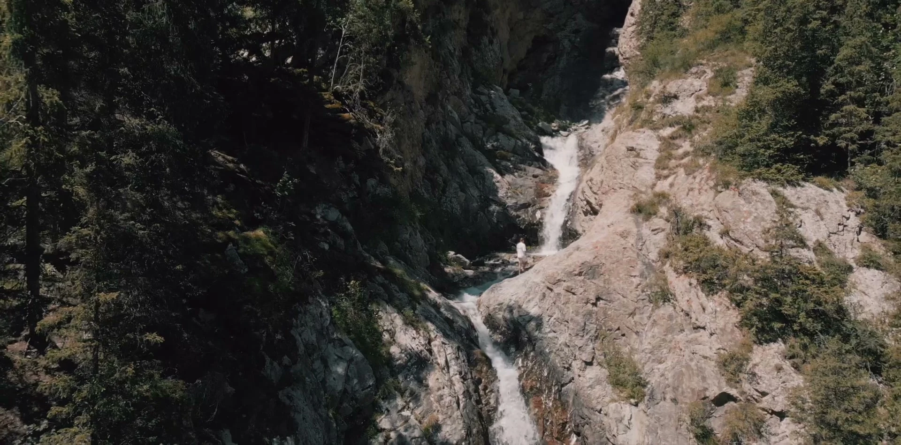

Авторские экспедиции по Кыргызстану: внедорожники, горы, озёра и юрты. Небольшие группы и маршруты на любой сезон.

Восемь дней, три озера, два внедорожника

Караван-сарай, высокогорное озеро и юрты

Алай, ледники и базовый лагерь

Леса, водопады и самое чистое озеро

Каньоны без толп и первые цветы

Золотой свет на высокогорных пастбищах

Снег, горячая вода и охотники с беркутом
Хотите другую длительность, даты или состав: компания друзей, семья, корпоративная поездка? Соберём маршрут под вас.
Оставьте контакты — вернёмся с программой и расчётом под вашу группу и даты. Если пока сомневаетесь, тоже напишите: расскажем, подходит ли вам такой формат.
Что будет дальше
Мы свяжемся с вами, ответим на вопросы и пришлём программу с расчётом. Состав услуг и стоимость согласовываем отдельно.
Заявка
Оставьте контакты — вернёмся с программой и расчётом под вашу группу и даты.